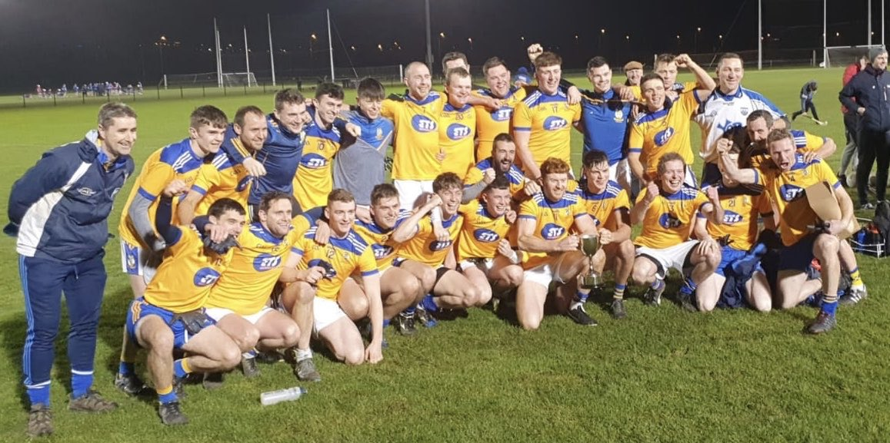
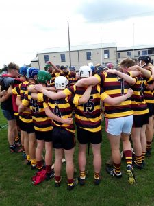
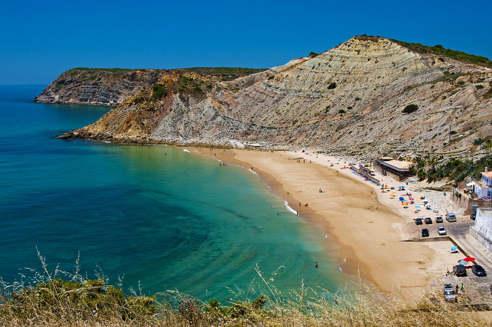
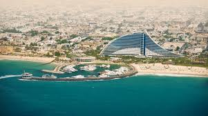
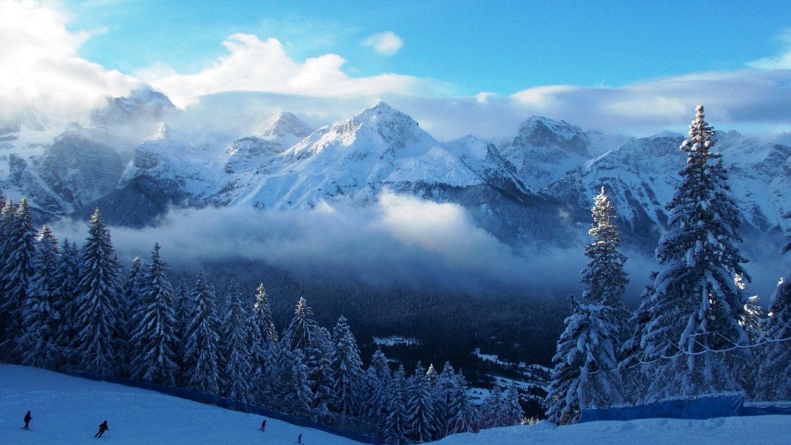

Sports
My main sporting interest would have to be hurling, as you can see below from the pictures the GAA has a big influence in my life. I use the GAA not only as excercise but also as an outlet or break away from all the other things in my life whether that is from college work or part time work. It acts as a stress reliever and even anytime that I may have worries all I have to do is go outside and pick up the hurley and it does the world of good.



Travel
To this day I have travelled to quite a few places. My favourite of thses places would have to be Burgau on the Algarve in Portugal. For the last 5 years this has been my family's go-to holiday destination as it is a small, secluded seaside town, and the loudest thing you would hear would either be the break of the waves or a boat engine starting. In the second picture is probably the best holiday destination which I have travelled to, it is Dubai in the UAE. This destination was the most unique place I have ever visited, for example in the hotel which I stayed there was a waterpark in the hotel grounds and this was something which I have never seen before. I do hope someday I can go back to Dubai as since I last visited it has developed even more. Lastly, I have a picture of the Andalo ski resort in Italy. This picture represents the ski trip I went on with my school in 2017, it does not also represent the trip but also the mempries I have of the trip and the experiences and skills I learned on the trip, and also skiing is definitely a holiday which I would love to do again.


